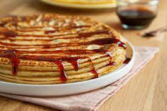

Pannenkoeken bakken!
Een pannenkoek is een gerecht, bestaande uit meel, ei, melk en wat zout, dat in een koekenpan met verhitte vetstof wordt gebakken. Pannenkoeken worden vaak opgerold of opgeplooid gegeten met zoete of hartige vulling. Men kan ze zowel warm als koud eten.
Recept
- Zeef de bloem met de vanillesuiker. Maak in het midden een kuiltje, breek daarin de eieren. Roer alles door elkaar met een garde.
- Schenk er in een straaltje 300 ml melk bij. Bewerk tot een glad mengsel.
- Klop dan de rest van de melk door het beslag zodat het lichter wordt. Vind je het beslag nog te dik, voeg dan eventueel nog wat extra melk toe (in totaal heb je 500 à 600 ml melk nodig).
- Bak de pannenkoeken in een grote koekenpan, in hete boter of olie.
- Als de bovenzijde droog is en de onderkant een mooi kleurtje heeft, kun je hem omdraaien met een spatel of met de deksel van een pan
- Als beide kanten gebakken zijn kan je de pannenkoek serveren met je favoriete beleg
